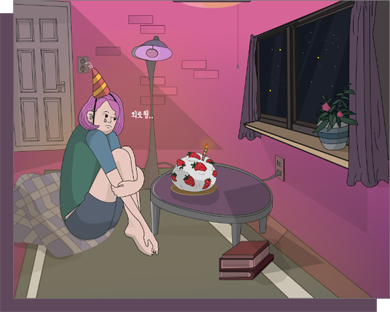
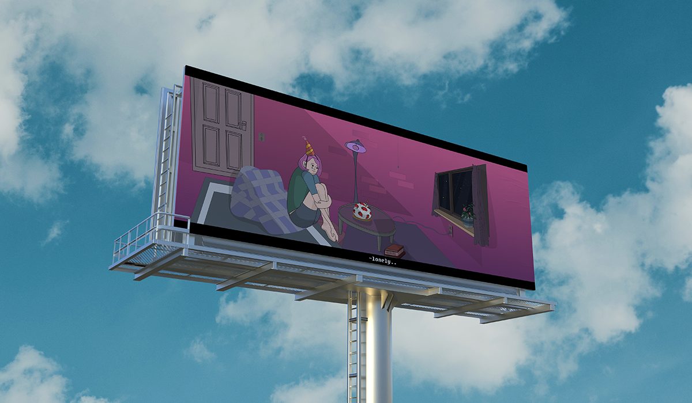
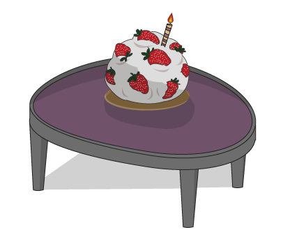
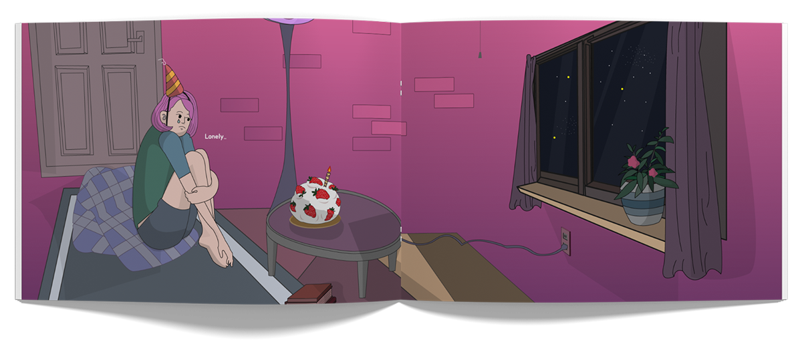
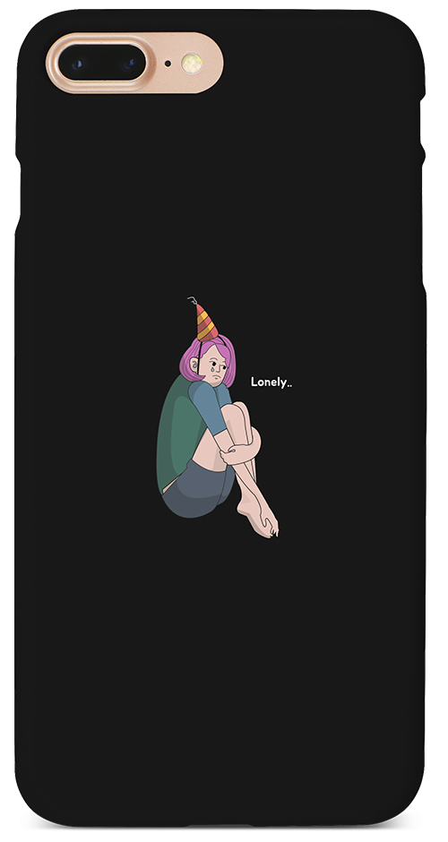
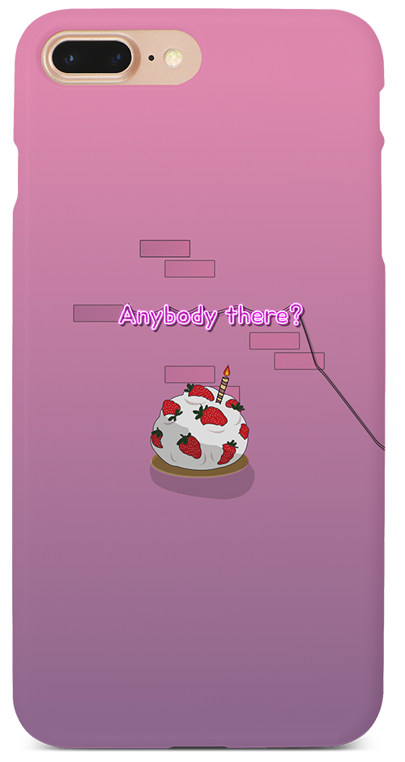
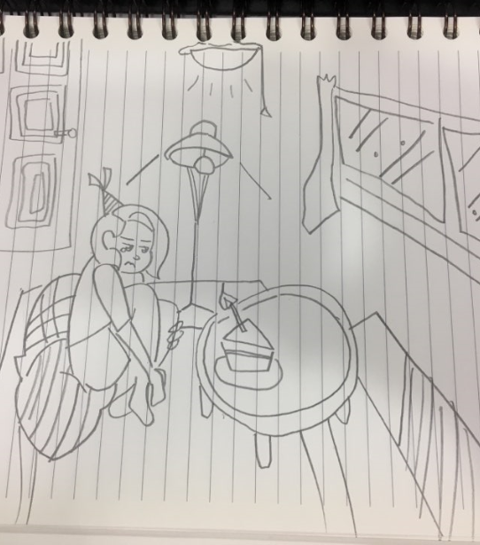
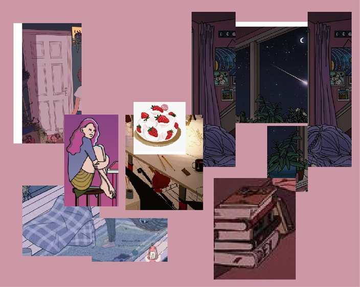

LONELY
기획의도
방 안에 '혼자' 있어본적 있나요?
만약 그날이 기념일 이라면 외로운 기분이겠죠
하지만 방안의 온기와 감성에 위로를 받을 수도 있을 것 같습니다.
일러스트 'Lonely'는 그 외로움에서 오는 위로를 담기위해 그렸습니다.
외로워서 어둡지만 방 안의 조명이 따듯하게 밝혀주는 일러스트를 소개합니다.


LONELY
방 안에 '혼자' 있어본적 있나요?
만약 그날이 기념일 이라면 외로운 기분이겠죠
하지만 방안의 온기와 감성에 위로를 받을 수도 있을 것 같습니다.
일러스트 'Lonely'는 그 외로움에서 오는 위로를 담기위해 그렸습니다.
외로워서 어둡지만 방 안의 조명이 따듯하게 밝혀주는 일러스트를 소개합니다.

일러스트레이터 ‘신모래’ 일러스트의
분위기를 참고하여 제작하였습니다.
대표 색깔을 보라색으로 선정하여 밤,감성적인 분위기를 만들었고,
평면적인 이미지를 입체적으로 보일 수 있게끔
조명과 그림자를 많이 사용하였습니다.


공백을 가득 담은 케이크입니다.
큰 케이크 위 꽃혀진 촛불 하나는
혼자임에도 제대로 기념일을 보내겠다는 다짐을 뜻합니다.

색은 보라색 계열의 그라디언트와 그 외의 색은
어두운 계열을 사용하여 보라색보다 눈에 띄지 않게
표현하였습니다.



아이디어 스케치에서는 더 많이 우울해하는 표정을 짓는 사람과
조각 케이크하나에 꽃혀있는 촛불한개가 특징입니다.
하지만 그리면서 외롭지만 너무 외롭지 않게,
케이크는 조각보다는 케이크 한판으로 외로움을 달랠 수 있도록
다시 표현하였습니다.

이미지 활용 편집에서는
보라색과 따듯한 감성, 어두운계열과 밤을
표현 할 수 있도록 관련된 이미지를 수집하였습니다.